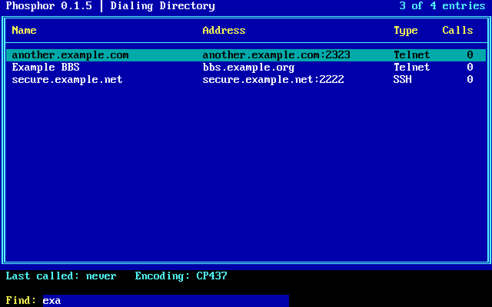

Pixel-exact ANSI
Phosphor draws its own screen with the IBM VGA fonts, 8 or 9 dots wide, at 80x25 or 80x50. iCE colors, blinking, xterm 256-color and 24-bit color, all rendered the way BBS software expects.
The ANSI-BBS client for Windows, macOS and Linux, with the glow of a real CRT.
Telnet and SSH, ZMODEM file transfers, iCE colors and pixel-exact VGA fonts, so BBS art looks the way it did in 1994. Free software under the GPL.
Early development: version 0.1.

Phosphor draws its own screen with the IBM VGA fonts, 8 or 9 dots wide, at 80x25 or 80x50. iCE colors, blinking, xterm 256-color and 24-bit color, all rendered the way BBS software expects.
Press Alt-P for the look of a CRT: glowing text, scanlines and curved glass, in color or as a green or amber monochrome monitor. Alt-A shows the screen at 4:3.
Telnet with the options BBSes use, raw TCP, and SSH with keys, your SSH agent or a password. Passwords can be kept in your system's keychain.
Downloads start by themselves when the BBS sends a file. Upload with Alt-U or by dropping files on the window. Batches, progress and cancel included.
Search, sort, pin favorites, and import or export SyncTERM lists, CSV, JSON or TOML. The Vortex BBS comes pre-loaded.
10,000 lines of scrollback, including screens the BBS cleared. Copy with the mouse as text or ANSI, capture sessions, or save the screen as .ans, .txt or .png.
BBS tunes play through your speakers as a PC speaker would play them.
Written in Rust and licensed under the GNU GPL, version 3 or later. No accounts, no telemetry.


The dialing directory and dialogs are drawn with the same CP437 characters as the BBSes themselves.



A zip with phosphor.exe. Unzip it and run it; nothing to install.
A disk image: drag Phosphor to Applications. The first time, Control-click it and choose Open, as it isn't notarized yet.
macOS (Apple silicon)An AppImage that runs on most distributions (chmod +x it), or a tarball with the bare program.
All downloads are on the releases page, with SHA-256 checksums. Or build it yourself: cargo build --release.
The Vortex BBS is where Phosphor lives. Call in, say hello, and tell us what to build next.